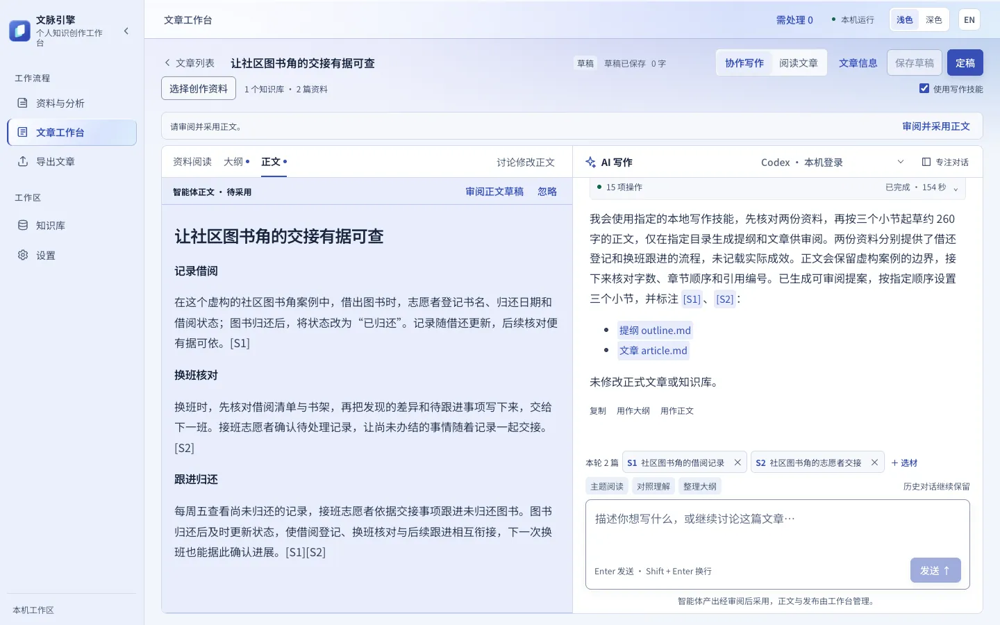
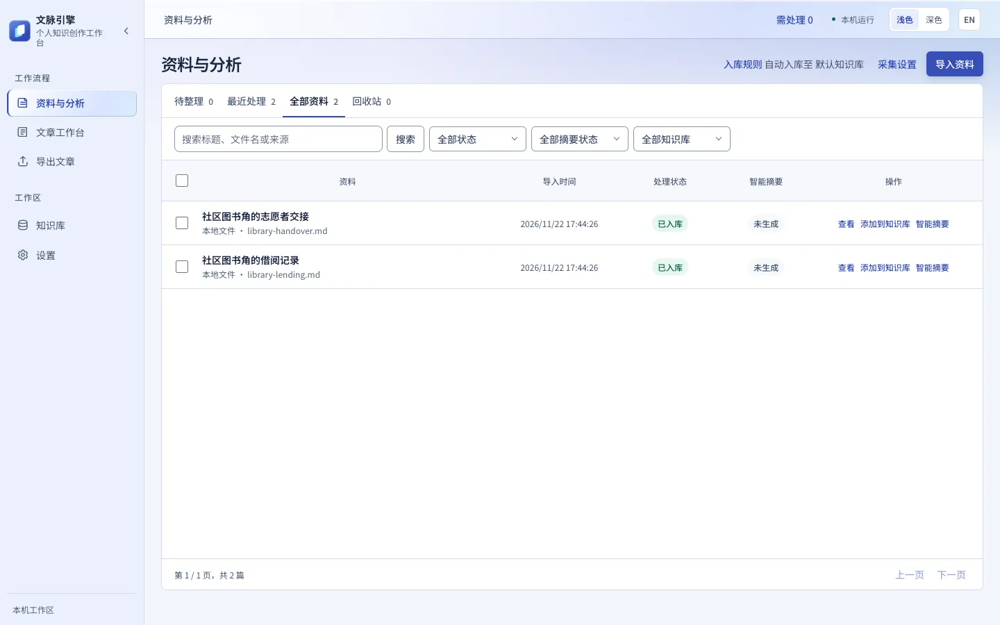
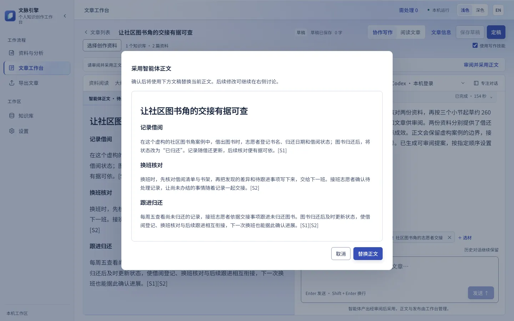
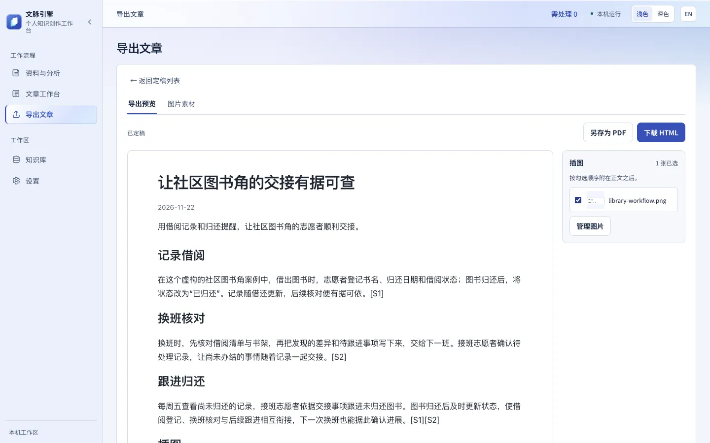

本地知识创作工作台
把收集的资料， 写成自己的文章。
把资料存入知识库，选一篇或多篇与 Codex 或 Claude 一起写。审阅定稿后，连同插图导出 PDF 或离线 HTML。

从资料到成稿
用一篇资料写一篇解读，也可以对照多个来源，写出自己的分析。

把原始资料存进知识库
导入 Markdown、HTML、纯文本或 ZIP。入库后，在知识库里核对原文和来源信息。
- 使用内置知识库，或连接已有的 Obsidian 文件夹。
- 按规则自动入库，可按库开启自动维护。
- 需要快速梳理资料时，可生成带原文依据的智能摘要。

选好来源，再讨论和审阅
选用一篇或多篇资料，在右侧与本机 Codex 或 Claude 讨论大纲和正文。
- 从对话打开大纲和正文，核对引用与当轮资料。
- 审阅并采用后，左侧工作台才更新正式文稿。

在本机开始写作
使用 Node.js 22.12 或更高版本。按安装说明准备入库、写作技能，并在本机登录 Codex 或 Claude CLI 后开始 AI 写作。